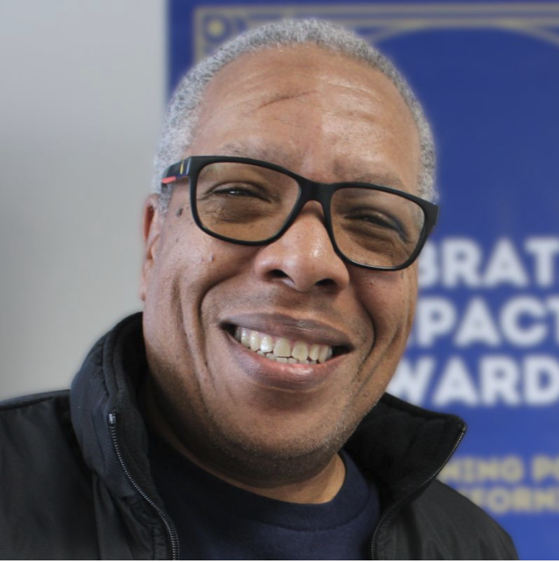
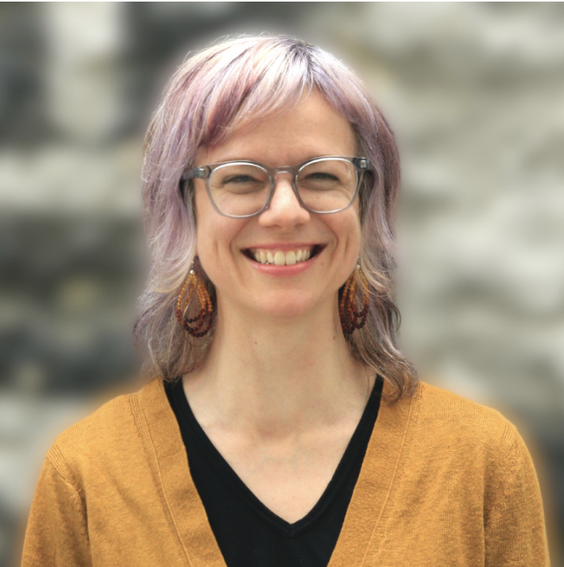

The Lived Experience Leadership Institute was founded on a simple conviction: the people closest to a problem hold the deepest expertise for solving it. LELI makes that expertise count in Contra Costa County's work to reduce homelessness — and in any municipality ready to do the same — in the rooms, at the tables, and in the planning conversations where decisions are actually made.
LELI doesn't come from a think tank or a workshop series. It comes from the lived experience of its founder, Loren Dalbert, and the work he has done in Contra Costa County since 2021 — designing the CoCo Go BIG guaranteed income pilot, leading the East Contra Costa Mobility LABs initiative, and serving as a lived experience consultant helping shape the County's strategic plan to reduce homelessness, its implementation, and its evaluation.
That work surfaced a deeper truth: lived experience rarely stays in one lane. Navigating homelessness usually means also navigating behavioral health, disability services, workforce development, reentry, youth welfare, or aging systems — often several at once, and often for family as well as self. Every Fellow brings that whole map with them. LELI trains them to use all of it, so the County gains consultants who can strengthen planning and implementation across the full range of services it delivers.
One consultant at that table works. It shouldn't be singular.
LELI is the infrastructure that turns one consultant into a growing community of consultants. It is a 12-month fellowship that does not extract community voice — it builds community capacity. Fellows don't just provide input. They become the consultants, the analysts, and the advocates.
The Civic Signals Network — the community-owned research platform at the heart of the fellowship — ensures that the findings Fellows produce carry the weight of rigorous, documented community reasoning, not just algorithmic summary. AI handles the scale. Fellows handle the truth.
"Lived experience can tell you what's wrong. Living expertise can help you build it right."
— The LELI Framework
Developing one consultant strengthens planning, implementation, and evaluation across every system that Fellow has navigated — for themselves or their family.
Traditional civic engagement gathers community voice. LELI builds community capacity to act on it. Three design commitments keep that distinction real — not rhetorical.
Fellows are paid for their work. This disrupts the tradition of asking the most affected communities to donate their knowledge, on top of everything else.
The Civic Signals Network is designed so AI multiplies what Fellows can attend to — it never replaces their judgment. Community voice is never quietly replaced by algorithmic summary.
Fellows are recruited from people who have navigated homelessness and the Continuum of Care in Contra Costa County — the residents whose perspectives can strengthen homelessness policy most, and are most often missing from the tables where it's made.
LELI is delivered by a team that combines community-rooted leadership, decade-long public-sector design practice, and lived experience of the systems the fellowship seeks to change.

Community systems designer focused on integrating lived experience into public policy design. Creator of the LELI framework; designer of the CoCo Go BIG guaranteed income pilot; former Program Manager of the East Contra Costa Mobility LABs initiative. Loren's work catalyzed $4.25M in Contra Costa County funding and shaped the civic infrastructure now embedded in this fellowship. A disabled veteran with lived experience of homelessness and poverty, based in Antioch, California.
On this project: day-to-day fellowship operations, County and Continuum of Care partnership coordination, Civic Signals Network development, and co-design of the consulting curriculum.

Creative systems thinker and human-centered design practitioner with over a decade of experience in social innovation and graduate education in public administration and policy. As Co-Founder and Managing Partner of CivicMakers, Judi co-designs immersive, accessible learning experiences — from graduate-level courses to co-design sessions with women business owners in Kenya to virtual HCD trainings with municipal staff at all levels.
On this project: Civic Signals Network analysis support, community input processing, pattern identification across the county's homelessness response, and co-design of the learning evaluation framework and end-of-year impact report.
LELI is delivered through a partnership structure designed to combine community-rooted leadership, proven public-sector delivery capacity, and rigorous charitable compliance.
A Lived Experience Led Organization founded by Loren Dalbert. Contributes the LELI framework, working relationships across Contra Costa's homelessness response system, and the lived-experience leadership that anchors Fellow recruitment, curriculum design, and the Civic Signals Network methodology.
A strategic consultancy and community of practitioners celebrating 10 years of human-centered design with governments, nonprofits, and mission-driven organizations. Brings institutional capacity across community engagement, facilitation, training design, and operational infrastructure that meets public-funder standards.
A registered 501(c)(3) public charity specializing in fiscal sponsorship of mission-driven projects. Provides the charitable umbrella, financial oversight, grants administration, and reimbursement-grant cash-flow management — removing compliance risk from the County's perspective.
Together, Dalbert Design and CivicMakers operate as Ridiculously Hopeful Futures in California — a bold initiative building structures where community members and policymakers co-imagine and co-design solutions. LELI is its flagship program.
LELI centers the people whose voices are hardest for the system to hear — those living unsheltered, families in vehicles, youth on their own, veterans, elders, returning citizens, and people navigating homelessness alongside disability, mental health, or recovery.
Current or former — sheltered, unsheltered, doubled-up, vehicular, or in transition. Exactly the expertise the strategic plan needs at its table.
Homelessness is experienced differently at every age — a young person on their own knows things an elder doesn't, and vice versa. The cohort is built to hold that range.
From outreach and coordinated entry to shelter, housing, and aftercare — Fellows have navigated the Continuum of Care firsthand, and the Civic Signals Network connects what they know.
AI translation capabilities within the Civic Signals Network ensure that residents' voices in every language are included in Fellow analysis — not filtered out by language barriers before they reach a policymaker.
Marathon & Phillips 66 Community Benefits Agreement
Applications are open to anyone with current or former lived experience of homelessness. Cohort dates announcing soon.